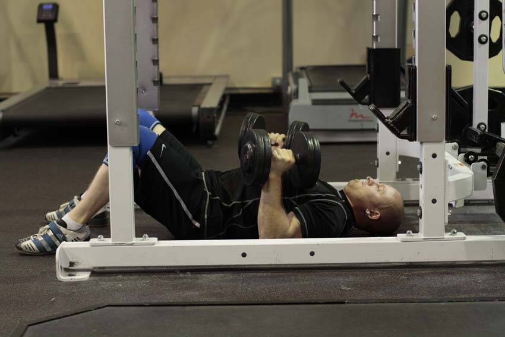

- Lay on the floor holding dumbbells in your hands. Your knees can be bent. Begin with the weights fully extended above you.
- Lower the weights until your upper arm comes in contact with the floor. You can tuck your elbows to emphasize triceps size and strength, or to focus on your chest angle your arms to the side.
- Pause at the bottom, and then bring the weight together at the top by extending through the elbows.
This exercise appears in Programmd training programs. Take the quiz to find one for your gym.
Find your program